Setting up Experiments
This section provides all resources you need to start and configure an experiment.
Starting an Experiment and Setting Storage Directories
To begin, add a new experiment by pressing Add on the Experiments tab.
You can create multiple experiments and select the one you want to run. Once selected, its contents appear in the Experiment Editor:
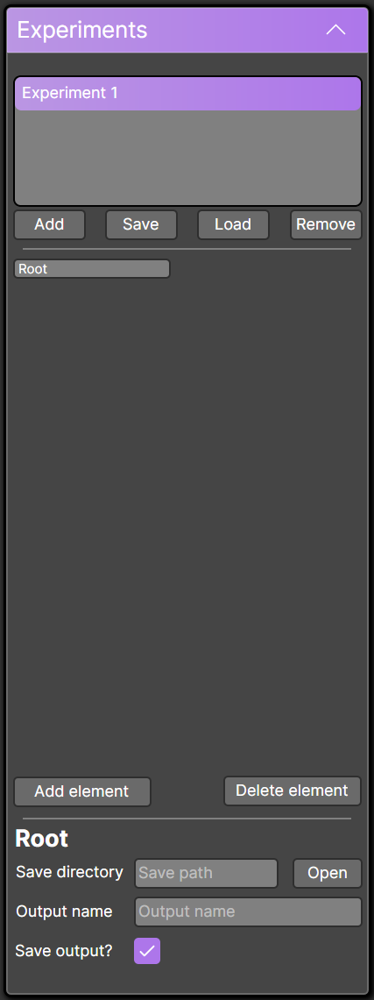
By default, the first element is called Root. This element contains the storage location and file name settings.
You can enable or disable storage (default is enabled) depending on whether you want to save your results.
Note: The Root element cannot be deleted.
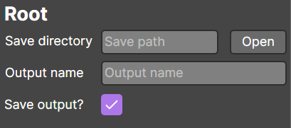
Adding and Re-arranging Elements
The Experiment Editor contains all elements that will be executed.
- Add an element: Press Add element
- Delete an element: Select it and press Delete element
- Reorder elements: Drag them to a new position or inside other elements
Elements nested inside another element will execute within that context.
Example 1: A DoTimes loop containing a Detection and a Wait:
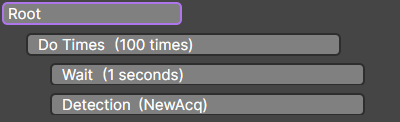
This will execute a loop where each iteration waits 1 second before performing the detection.
Example 2: A more complex workflow:
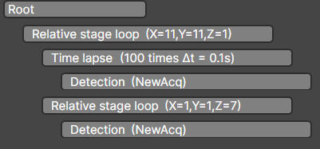
This workflow performs a relative stage loop (tile scan). At each position:
- Acquire a time-lapse of 100 images with ΔT = 0.01 s
- Acquire a Z-stack at that position
Important: Only certain elements can contain child elements:
- Do Times
- Relative Stage Loop
- Stage Loop
- Time Lapse
Available Elements
Detection
The Detection element handles data acquisition.
It cannot have children.
When added, all user-defined acquisition settings are enabled by default.
You can toggle each setting on or off. All enabled settings are applied sequentially.
Example: GFP and Cy5 acquisition settings active
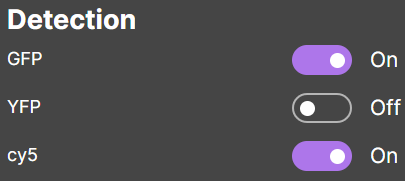
Relative Stage Loop
A Relative Stage Loop defines a tile scan relative to the current position.
It generates a grid in XYZ, with adjustable number of tiles and step size.
The Return to original position option moves the stage back to the starting point after completion.
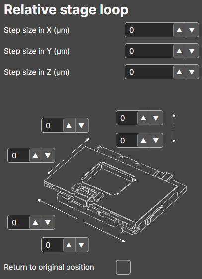
Stage Loop
Moves the stage to a set of predefined positions or specific XYZ coordinates.
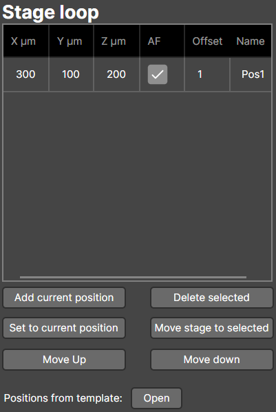
Position List Actions:
- Add current position – Adds the stage’s current coordinates
- Set to current position – Overwrites the selected position with current coordinates
- Move up / Move down – Reorder positions in the list
- Delete selected – Remove a position
- Move stage to selected – Move the stage to the chosen position
Positions can also be loaded from templates. For example, a 96-well plate (9 mm spacing):
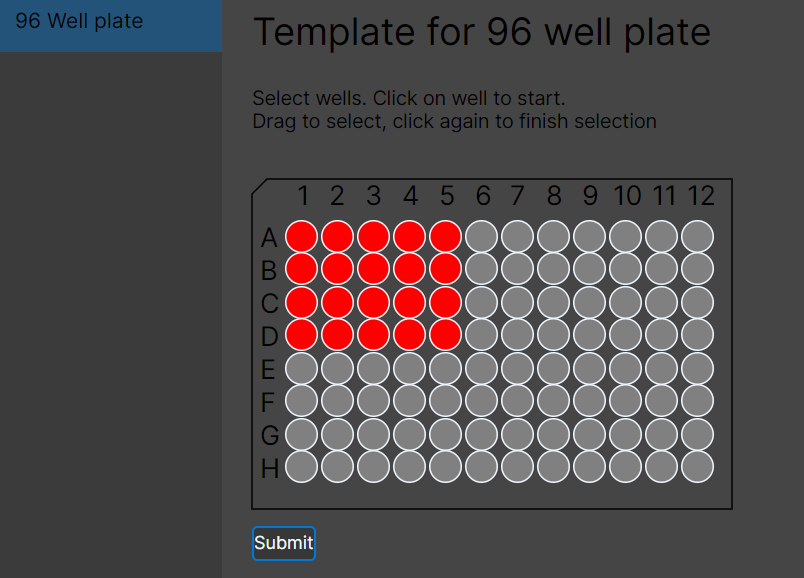
Positions follow a chessboard naming pattern.
Wait For Time
Pauses execution for a specified number of seconds.
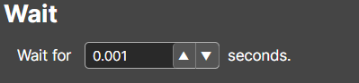
Irradiation
Irradiates a sample using a selected light source for a defined duration.
No data is acquired during irradiation.
Example: 20 seconds at 100% power on "ch1"

Do Times
A Do Times element acts as a for-loop.
It repeats all child elements N times.
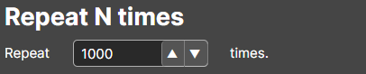
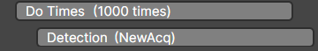
DoTimes loops containing only **Detection** elements are converted internally into a **fast acquisition loop**. This communicates with the camera once to acquire all frames asynchronously, avoiding delays from repeated back-and-forth commands. ⚠️ Adding other elements inside the loop disables this optimization.Time Lapse
Repeats all child elements with a predefined interval between repetitions.
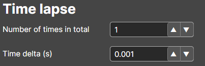
Update Acquisition
This element is used only with smart microscopy workflows.
See Setting up smart imaging pipelines for details.
Starting Your Experiment
Once the experiment tree is configured:
- Press Start at the top to begin execution
- Use the scrollbar to navigate through the experiment (disable Show last or change pinned position as needed)
- Press Stop to end the experiment